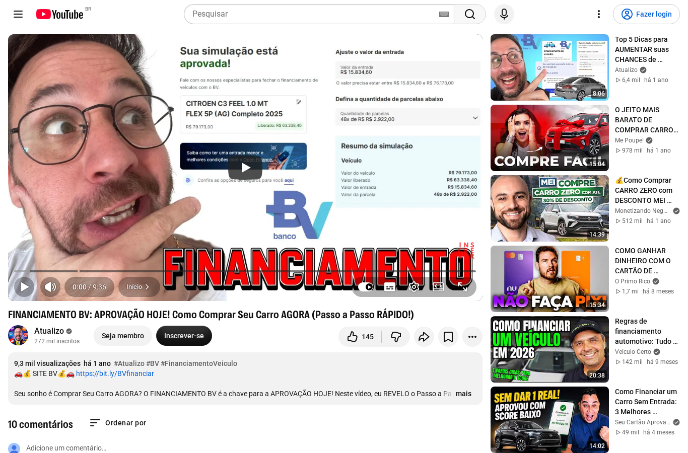
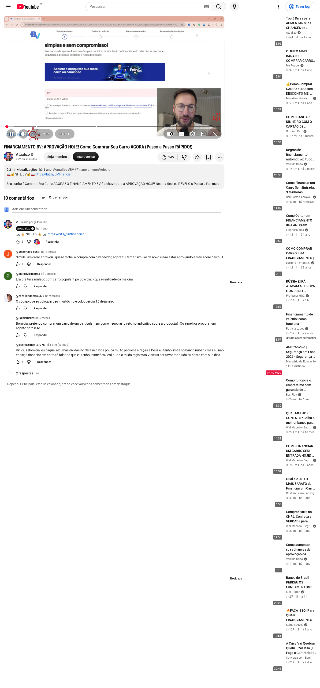

Sistema de Investigação de Marca e Identidade Online
https://www.youtube.com/watch?v=lwxlRXfuI8k
Prioridade: MEDIUM · Cenário: B_AMBIGUOUS_COMMUNICATION · Revisão humana: PENDING
O canal no YouTube atua como promotor digital/gerador de tráfego de financiamento automotivo, utilizando a marca e logotipo atual do Banco BV em destaque e disponibilizando link encurtado sob o rótulo 'SITE BV' para direcionamento de interessados. Há omissão de CNPJ e da declaração regulatória obrigatória de correspondente bancário (Res. CMN 4.935/2021), configurando comunicação ambígua com risco de confusão aos consumidores. [Revisor: CONFIRM] Confirma-se a classificação de REVIEW_REQUIRED. O canal no YouTube atua como promotor digital de financiamento veicular, utilizando a marca Banco BV no título e na thumbnail em conjunto com um link de captação de leads/redirecionamento ('bit.ly/BVfinanciar') expressamente rotulado como 'SITE BV'. Não há identificação clara de razão social, CNPJ ou aviso regulatório de correspondente bancário/intermediação conforme as normas aplicáveis, gerando ambiguidade de vínculo e potenciais riscos ao consumidor.


| Ref | Tipo | Local | Conteúdo |
|---|---|---|---|
| E-URL | domain | url | URL final: https://www.youtube.com/watch?v=lwxlRXfuI8k (domínio: www.youtube.com) |
| E-COLLECT | network | collection | Status da coleta: OK; HTTP 200; ocorrências: HTML truncated to 2000000 bytes |
| E-DISC-001 | text | search_index | Índice de busca (grounding): youtube.com — Com base na execução das consultas públicas direcionadas a plataformas de vídeos e redes sociais (YouTube, Kwai e Threads), foram identificados canais, lojas revendedoras de veículos e promotores que utilizam os nomes comerciais **"Banco BV"** e **"BV Financeira"** em vídeos, feirões e tutoriais de simulação de financiamento | `https://www.youtube.com/watch` (*"EMPRÉSTIMO GARANTIA VEÍCULO Banco BV"* / *"Como Financiar Veículo Banco BV"*) | **Plataforma:** YouTube | **Como a marca é utilizada:** Utiliza os nomes "Banco BV" e "BV Financeira" nos títulos e capas para guiar o espectador em processos de simulação online | Disponibiliza links encurtados de captação de leads (`bit.ly/BVfinanciar`) na descrição, direcionando os interessados | Trata-se de canal mantido por pessoa física / promotor digital, sem disponibilizar razão social, CNPJ de empresa intermediadora ou aviso regulatório de que não se trata de canal oficial do banco | **Ausência da Declaração Obrigatória (Resolu |
| E-SHOT-VIEWPORT | screenshot | viewport | evidence/C60b8d4d12d/attempt-1/viewport.png (sha256 961850bb1614f7d5…) |
| E-SHOT-FULL | screenshot | page | evidence/C60b8d4d12d/attempt-1/fullpage.png (sha256 26021ceac5611601…) |
| E-TITLE | title | head | FINANCIAMENTO BV: APROVAÇÃO HOJE! Como Comprar Seu Carro AGORA (Passo a Passo RÁPIDO!) - YouTube |
| E-META-1 | meta | head | description: 🚗💰 SITE BV💰🚗 https://bit.ly/BVfinanciarSeu sonho é Comprar Seu Carro AGORA? O FINANCIAMENTO BV é a chave para a APROVAÇÃO HOJE! Neste vídeo, eu REVELO o ... |
| E-META-2 | meta | head | og:site_name: YouTube |
| E-META-3 | meta | head | og:title: FINANCIAMENTO BV: APROVAÇÃO HOJE! Como Comprar Seu Carro AGORA (Passo a Passo RÁPIDO!) |
| E-META-4 | meta | head | og:description: 🚗💰 SITE BV💰🚗 https://bit.ly/BVfinanciarSeu sonho é Comprar Seu Carro AGORA? O FINANCIAMENTO BV é a chave para a APROVAÇÃO HOJE! Neste vídeo, eu REVELO o ... |
| E-CANONICAL | meta | head | https://www.youtube.com/watch?v=lwxlRXfuI8k |
| E-HEAD-1 | heading | page | FINANCIAMENTO BV: APROVAÇÃO HOJE! Como Comprar Seu Carro AGORA (Passo a Passo RÁPIDO!) |
| E-HEAD-2 | heading | page | 10 comentários |
| E-HEAD-3 | heading | page | @JoaoPaulo-oy6bf |
| E-HEAD-4 | heading | page | @patrickvieira5013 |
| E-HEAD-5 | heading | page | @edenildogomes2377 |
| E-HEAD-6 | heading | page | @EdimarSalles |
| E-HEAD-7 | heading | page | @alannascimento7775 |
| E-HEAD-8 | heading | page | Top 5 Dicas para AUMENTAR suas CHANCES de Aprovação de Financiamento de Veículo! |
| E-HEAD-9 | heading | page | O JEITO MAIS BARATO DE COMPRAR CARRO! consórcio x financiamento |
| E-HEAD-10 | heading | page | 💰Como Comprar CARRO ZERO com DESCONTO MEI (2026) ✅ PASSO a PASSO 🤩 TUTORIAL COMPLETO |
| E-HEAD-11 | heading | page | COMO GANHAR DINHEIRO COM O CARTÃO DE CRÉDITO (não faça PIX) |
| E-HEAD-12 | heading | page | Regras de financiamento automotivo: Tudo que você precisa saber para financiar um veiculo em 2026 |
| E-HEAD-13 | heading | page | Como Financiar um Carro Sem Entrada: 3 Melhores BANCOS que APROVA na Hora |
| E-HEAD-14 | heading | page | Como Quitar um FINANCIAMENTO de 4 ANOS em Apenas 1 ANO (Mesmo com Pouco Dinheiro) |
| E-HEAD-15 | heading | page | COMO COMPRAR CARRO SEM FINANCIAMENTO | FUJA DOS JUROS ABUSIVOS! |
| E-HDR | text | header | BR Pular navegação Fazer login |
| E-FOLD | text | viewport (acima da dobra) | BR Fazer login 0:00 / 9:36 Início FINANCIAMENTO BV: APROVAÇÃO HOJE! Como Comprar Seu Carro AGORA (Passo a Passo RÁPIDO!) Atualizo 272 mil inscritos Seja membro Inscrever-se 145 9,3 mil visualizações há 1 ano #Atualizo #BV #FinanciamentoVeiculo 🚗💰 SITE BV💰🚗 https://bit.ly/BVfinanciar Seu sonho é Comprar Seu Carro AGORA? O FINANCIAMENTO BV é a chave para a APROVAÇÃO HOJE! Neste vídeo, eu REVELO o Passo a Pa mais 10 comentários Ordenar por Adicione um comentário… 8:06 Top 5 Dicas para AUMENTAR suas CHANCES de Aprovação de Financiamento de Veículo! Atualizo 6,4 mil há 1 ano 15:04 O JEITO MAIS BARATO DE COMPRAR CARRO! consórcio x financiamento Me Poupe! 978 mil há 1 ano 14:39 💰Como Comprar CARRO ZERO com DESCONTO MEI (2026) ✅ PASSO a PASSO 🤩 TUTORIAL COMPLETO Monetizando Negócios | Everton Lourenço 512 mil há 1 ano 15:34 COMO GANHAR DINHEIRO COM O CARTÃO DE CRÉDITO (não faça PIX) O Primo Rico 1,7 mi há 8 meses 20:38 Regras de financiamento automotivo: Tudo que você precisa saber para financiar um veiculo em 2026 Veículo Certo 142 mil há 9 meses 14:02 Como Financiar um Carro Sem Entrada: 3 Melhores BANCOS que APROVA na Hora Seu Cartão Aprovado 49 mil há 4 meses |
| E-NAV | nav | header | Página inicial do YouTube <https://www.youtube.com/> | Fazer login <https://accounts.google.com/ServiceLogin?service=youtube&uilel=3&passive=true&continue=https%3A%2F%2Fwww.youtube.com%2Fsignin%3Faction_handle_signin%3Dtrue%26app%3Ddesktop%26hl%3Dpt%26next%3Dhttps%253A%252F%252Fwww.youtube.com%252Fwatch%253Fv%253DlwxlRXfuI8k&hl=pt-BR&ec=65620> |
| E-CTA-1 | cta | header | Guia |
| E-CTA-2 | cta | header | Pular navegação |
| E-CTA-3 | cta | header | Search |
| E-CTA-4 | cta | header | Pesquisar com sua voz |
| E-CTA-5 | cta | header | Configurações |
| E-CTA-6 | cta | page | Reproduzir |
| E-CTA-7 | cta | page | Reproduzir (k) |
| E-CTA-8 | cta | page | Sem áudio (m) |
| E-CTA-9 | cta | page | Início |
| E-CTA-10 | cta | page | A reprodução automática está ativada |
| E-CTA-11 | cta | page | Não há legendas/legendas descritivas disponíveis |
| E-CTA-12 | cta | page | Detalhes |
| E-CTA-13 | cta | page | Modo Teatro (t) |
| E-CTA-14 | cta | page | Tela inteira (f) |
| E-CTA-15 | cta | page | Seja membro |
| E-CTA-16 | cta | page | Inscrever-se |
| E-CTA-17 | cta | page | 145 |
| E-CTA-18 | cta | page | Não gostei deste vídeo |
| E-CTA-19 | cta | page | Compartilhar |
| E-CTA-20 | cta | page | Salvar na playlist |
| E-CONTACT-1 | contact | page | / card0z0 <https://www.youtube.com/redirect?event=video_description&redir_token=QUlxb01IWmoweWFJZEhRcUxXc2hFNXlWamx4S3xBQnJ0NjlsM2Z2bGVOLW5BaVExa013aHRCbVktWFhUdWl4ZW5DeEZYSkhUbGRtVGxFbXg5aEJINVNEX3pTdURqNWp6eVVTSzI1RXpLV2kyVmZEUC1OVE1vVzh5dTE4VlRTNTlX&q=https%3A%2F%2Finstagram.com%2Fcard0z0&v=lwxlRXfuI8k> |
| E-TXT-001 | text | page | FINANCIAMENTO BV: APROVAÇÃO HOJE! Como Comprar Seu Carro AGORA (Passo a Passo RÁPIDO!) |
| E-TXT-002 | text | page | 9,3 mil visualizações há 1 ano #Atualizo #BV #FinanciamentoVeiculo |
| E-TXT-003 | text | page | 🚗💰 SITE BV💰🚗 https://bit.ly/BVfinanciar |
| E-TXT-004 | text | page | Seu sonho é Comprar Seu Carro AGORA? O FINANCIAMENTO BV é a chave para a APROVAÇÃO HOJE! Neste vídeo, eu REVELO o Passo a Pa … |
| E-TXT-005 | text | page | SITE BV https://bit.ly/BVfinanciar |
| E-TXT-006 | text | page | Vinícius Bom dia eu paguei algumas dívidas no Serasa dívida pouca muito pequena Graças a Deus eu tenho limite no banco nubank mas eu não consigo financiar em carro tá falando que eu tenho restrições Será que é o tal do registrato Vinícius por favor me ajuda eu conto com sua dica |
| E-TXT-007 | text | page | Como Financiar um Carro Sem Entrada: 3 Melhores BANCOS que APROVA na Hora |
| E-TXT-008 | text | page | QUAL MELHOR CONTA PJ? Saiba o melhor banco para abrir conta bancária PJ - ATUALIZADO |
| E-TXT-009 | text | page | Comprar carro no CNPJ: Conheça a VERDADE para comprar seu carro com desconto!! |
| E-TXT-010 | text | page | Banco do Brasil PERDEU OS FUNDAMENTOS? Veja o que os números revelam |
| E-NET-BLOCKED | network | collection | 1 requisição(ões) bloqueadas pela política: https://rr2---sn-aigl6nzl.googlevideo.com/videoplayback?expire=2825271414&ei=nEWVqMj_nhyMCu5c7utDw9t&ip=69.22.26.54&id=o-AF9YGTFxjZavGE20gDmVLr6umhor5uP8vlxi70hvBTpwc&itag=18&source=youtube&requiressl -> DNS resolution failed for rr2---sn-aigl6nzl.googlevideo.com: [Errno -2] Name or service not known |
| Dimensão | Sinal | Achado | Refs |
|---|---|---|---|
| VISUAL_IDENTITY | CONFUSION | O vídeo e a thumbnail incorporam elementos gráficos institucionais e o logotipo atual do Banco BV ('bv banco') com tela de simulação aprovada. | E-SHOT-VIEWPORT E-SHOT-FULL |
| DECLARED_COMMERCIAL_IDENTITY | NEUTRAL | Canal denominado 'Atualizo' (272 mil inscritos), aparentemente mantido por pessoa física / criador digital, sem CNPJ ou razão social declarada. | E-FOLD E-DISC-001 |
| CORRESPONDENT_TRANSPARENCY | CONFUSION | Inexistência da declaração formal de correspondente bancário ou aviso de ouvidoria da instituição financeira parceira. | E-FOLD E-DISC-001 |
| LOGO_USAGE | CONFUSION | Uso destacado do logotipo atual ('bv banco') em minúsculas azuis na miniatura do vídeo e na simulação. | E-SHOT-VIEWPORT |
| SERVICE_JOURNEY | CONFUSION | Captação de público via link encurtado externo bit.ly anunciado como 'SITE BV' para simulação de financiamento veicular. | E-TXT-003 E-TXT-005 |
| CONSUMER_CONFUSION | CONFUSION | Comentários de usuários demonstrando dúvidas sobre aprovação de crédito e negociação, refletindo confiança induzida pelo conteúdo. | E-TXT-006 E-SHOT-FULL |
O canal no YouTube atua como promotor digital/gerador de tráfego de financiamento automotivo, utilizando a marca e logotipo atual do Banco BV em destaque e disponibilizando link encurtado sob o rótulo 'SITE BV' para direcionamento de interessados. Há omissão de CNPJ e da declaração regulatória obrigatória de correspondente bancário (Res. CMN 4.935/2021), configurando comunicação ambígua com risco de confusão aos consumidores.
Nenhum CNPJ ou razão social identificáveis no conteúdo coletado.
| Tipo | Valor | Ref | Contexto |
|---|---|---|---|
| domain | youtube.com | E-URL | |
| social_profile | https://www.youtube.com/watch?v=lwxlRXfuI8k | E-URL | |
| social_profile | https://www.youtube.com/watch` | E-DISC-001 | |
| social_profile | https://www.youtube.com/redirect?event=video_description&redir_token=QUlxb01IWmoweWFJZEhRcUxXc2hFNXlWamx4S3xBQnJ0NjlsM2Z2bGVOLW5BaVExa013aHRCbVktWFhUdWl4ZW5DeEZYSkhUbGRtVGxFbXg5aEJINVNEX3pTdURqNWp6eVV | E-CONTACT-1 |
Mapeamento indicativo para apoio à auditoria. Não constitui conclusão regulatória; a decisão definitiva pertence à auditoria.
Fonte: NORMATIVE
Art. 14. O contrato de correspondente deve estabelecer: [...] II - vedação à utilização, pelo contratado, de logomarca ou de outros atributos que sejam similares aos adotados pela instituição contratante em suas agências, postos de atendimento, sítio eletrônico na internet, aplicativo ou outras plataformas de comunicação em rede;
Hipótese: Uso de logomarca, uso excessivo/desproporcional ou de atributos similares aos adotados pela contratante em seus canais. A norma disciplina correspondentes contratados; o responsável não foi identificado como correspondente.
Evidência observada: E-SHOT-FULL E-SHOT-VIEWPORT
Informação faltante:
Fonte: NORMATIVE
Art. 14. O contrato de correspondente deve estabelecer: [...] III - divulgação ao público, pelo contratado, de sua condição de prestador de serviços à instituição contratante, identificada pelo nome com que é conhecida no mercado, com descrição dos produtos e serviços oferecidos e canais de contato da instituição contratante, inclusive de sua ouvidoria, em local visível, em destaque e em formato legível, por meio de: a) sítio eletrônico do correspondente na internet, acessível na página inicial; b) aplicativo e outras plataformas de comunicação em rede do correspondente; [...]
Hipótese: Divulgação ao público da condição de prestador de serviços/parceria ausente, insuficiente, ambígua ou sem destaque. A norma disciplina correspondentes contratados; o responsável não foi identificado como correspondente.
Evidência observada: E-DISC-001 E-FOLD E-SHOT-FULL E-TITLE E-TXT-001 E-TXT-004 E-TXT-006
Informação faltante:
Fonte: NORMATIVE
Art. 3º O correspondente atua por conta e sob as diretrizes da instituição contratante, que assume inteira responsabilidade pelo atendimento prestado aos clientes e usuários por meio do contratado.
Hipótese: Atendimento ao público prestado por meio do contratado em condições que podem não seguir as diretrizes da contratante. A norma disciplina correspondentes contratados; o responsável não foi identificado como correspondente.
Evidência observada: E-DISC-001 E-META-1 E-TXT-003 E-TXT-005
Informação faltante:
Se o responsável não for correspondente contratado, os indícios podem caracterizar uso indevido de marca ou fraude, fora do escopo da Res. 4.935: avaliar encaminhamento às áreas jurídica/segurança.
Limitações: requisitos contratuais/internos não fornecidos: mapeamento limitado ao texto normativo
Decisão: CONFIRM → REVIEW_REQUIRED / MEDIUM
Confirma-se a classificação de REVIEW_REQUIRED. O canal no YouTube atua como promotor digital de financiamento veicular, utilizando a marca Banco BV no título e na thumbnail em conjunto com um link de captação de leads/redirecionamento ('bit.ly/BVfinanciar') expressamente rotulado como 'SITE BV'. Não há identificação clara de razão social, CNPJ ou aviso regulatório de correspondente bancário/intermediação conforme as normas aplicáveis, gerando ambiguidade de vínculo e potenciais riscos ao consumidor.
| Tema | Severidade | Questionamento | Refs |
|---|---|---|---|
| domain_attribution | MEDIUM | Responsável pela página não identificado; a conclusão sobre a marca não pode ser atribuída a um estabelecimento específico. | E-URL |
| Fonte | Consulta / hipótese | URL original | Título / trecho |
|---|---|---|---|
| grounding | Objetivo: Vídeos e canais (YouTube, Kwai, Threads) de lojas e promotoras usando a marca.
Execute no Google Search as seguintes consultas (dorks):
- site:youtube.com ("Banco BV" OR "bv financeira") (financiamento OR feirão OR loja OR consignado) -site:bv.com.br -site:bancobv.com.br -site:bvfinanceira.com.br -site:bvinvestimentos.com.br -site:napista.com.br -site:bvopen.com.br -site:meufinanciamentosolar.com.br -site:votorantim.com.br -site:vam.com.br
- site:kwai.com ("Banco BV" OR "bv financeira" OR "Feirão BV") -site:bv.com.br -site:bancobv.com.br -site:bvfinanceira.com.br -site:bvinvestimentos.com.br -site:napista.com.br -site:bvopen.com.br -site:meufinanciamentosolar.com.br -site:votorantim.com.br -site:vam.com.br
- site:threads.net ("Banco BV" OR "bv financeira") (financiamento OR feirão OR crédito) -site:bv.com.br -site:bancobv.com.br -site:bvfinanceira.com.br -site:bvinvestimentos.com.br -site:napista.com.br -site:bvopen.com.br -site:meufinanciamentosolar.com.br -site:votorantim.com.br -site:vam.com.br
Liste de forma abrangente as páginas públicas encontradas (até 12 resultados distintos), informando para cada uma o nome do estabelecimento/perfil, a URL e como a marca é utilizada (destaque visual, título, feirão, simulador, redes sociais e se há ou não identificação clara de CNPJ e condição de correspondente bancário). H6-platform:YouTube-Kwai-Threads | https://www.youtube.com/watch?v=lwxlRXfuI8k | youtube.com Com base na execução das consultas públicas direcionadas a plataformas de vídeos e redes sociais (YouTube, Kwai e Threads), foram identificados canais, lojas revendedoras de veículos e promotores que utilizam os nomes comerciais **"Banco BV"** e **"BV Financeira"** em vídeos, feirões e tutoriais de simulação de financiamento | `https://www.youtube.com/watch` (*"EMPRÉSTIMO GARANTIA VEÍCULO Banco BV"* / *"Como Financiar Veículo Banco BV"*) | **Plataforma:** YouTube | **Como a marca é utilizada:** Utiliza os nomes "Banco BV" e "BV Financeira" nos títulos e capas para guiar o espectador em processos de simulação online | Disponibiliza links encurtados de captação de leads (`bit.ly/BVfinanciar`) na descrição, direcionando os interessados | Trata-se de canal mantido por pessoa física / promotor digital, sem disponibilizar razão social, CNPJ de empresa intermediadora ou aviso regulatório de que não se trata de canal oficial do banco | **Ausência da Declaração Obrigatória (Resolução CMN nº 4.9 |
Original: https://www.youtube.com/watch?v=lwxlRXfuI8k
Final: https://www.youtube.com/watch?v=lwxlRXfuI8k
| Artefato | Caminho | SHA-256 | Bytes |
|---|---|---|---|
| screenshot_viewport | evidence/C60b8d4d12d/attempt-1/viewport.png | 961850bb1614f7d590223a00f36ad0f0f91c0d9cfb0081cfe3b246d95122a729 | 944687 |
| screenshot_full | evidence/C60b8d4d12d/attempt-1/fullpage.png | 26021ceac5611601551cc2c0a55156847ef4be7d72c53f10860cc1a4ce8949a0 | 540762 |
| html | evidence/C60b8d4d12d/attempt-1/page.html.txt | a91cd15360a62c0f8e577be4e1c6becb9642b921537b6ab7d59e364359e02771 | 2000000 |
| text | evidence/C60b8d4d12d/attempt-1/text.txt | d1443d6e27d3db046e089c5b090019046beee49dd2e88d6626602c572cd875ae | 4075 |
| page_data | evidence/C60b8d4d12d/attempt-1/page.json | 097a7f4146ad389dad456e18e9a5688db780449273b1281785eb72ac8075bea2 | 37605 |
| Quando | De | Para | Nota |
|---|---|---|---|
| 2026-11-25T18:12:11+00:00 | DISCOVERED | QUEUED | prioritised (score 1.0) |
| 2026-11-25T19:29:09+00:00 | QUEUED | COLLECTING | |
| 2026-11-25T19:29:20+00:00 | COLLECTING | COLLECTED | |
| 2026-11-25T19:29:20+00:00 | COLLECTED | ANALYZING | |
| 2026-11-25T19:29:46+00:00 | ANALYZING | REVIEWING | |
| 2026-11-25T19:29:55+00:00 | REVIEWING | COMPLETED |